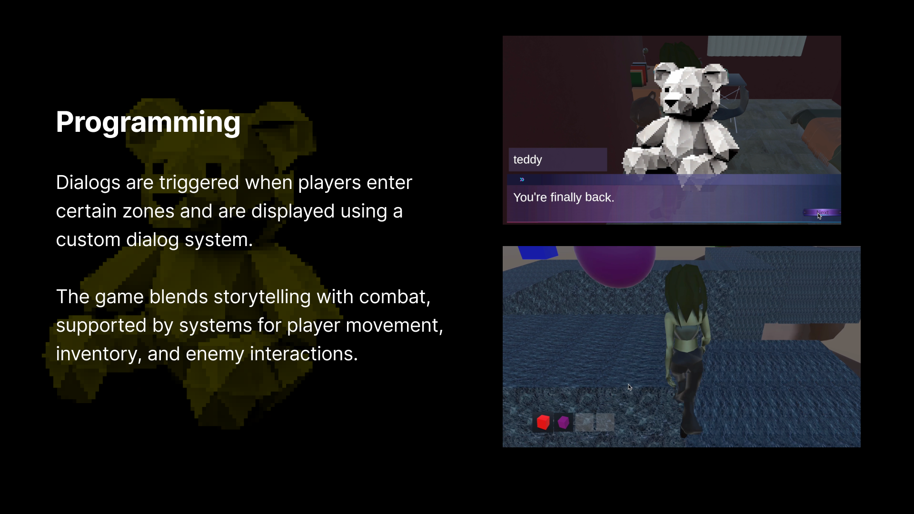
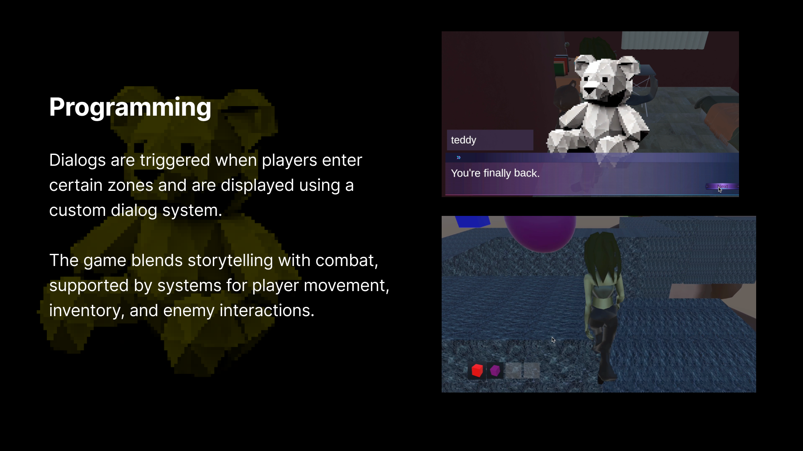

Birdie is a conceptualized musical instrument and social game designed to support physical mobility in seniors.
This project was created within
the Course Interactive Programming Design,
taught by Tz-Heng Fu, NTUT, Taiwan.


 
